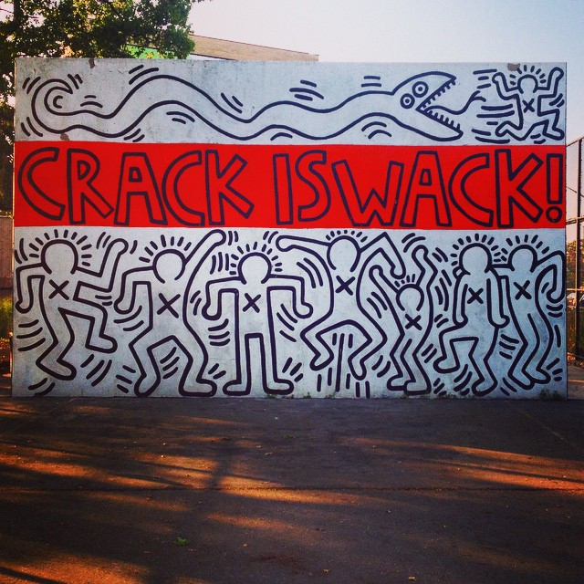

Nixon Declares War on Drugs
Nixon declares drugs “public enemy number one,” officially beginning The War on Drugs. “I’m asking the Congress for $155 million in new funds, which will bring the total amount this year in the budget for drug abuse, both in enforcement and treatment, to over $350 million,” said Nixon.
The Office of the Special Narcotics Prosecutor (SNP) was created by the New York State Legislature in response to an overwhelming heroin epidemic. SNP became and remains the only prosecutorial agency in the country exclusively dedicated to the investigation and prosecution of narcotics felonies.
Nixon created the Drug Enforcement Administration (DEA) within the Department of Justice. The DEA provided a centralized command center to carry out a global war on drugs. When the DEA was first established, it had a budget of $75 million, by 1975 the budget grew to 140 million. Now the DEA has a budget of $2.03 billion.
1971New York Establishes Rockefeller Drug Laws
In New York, Governor Nelson Rockefeller signed into law a series of measures that mandated lengthy prison sentences for people convicted of a range of felony drug offenses. The laws have come to be known as the Rockefeller Drug Laws. Under the new laws, possession of as little as 4 ounces of a narcotic - from marijuana to crack cocaine - would mandate a minimum sentence of 15 years in prison with a maximum of life sentence. As a result, drug offenders as a percentage of New York’s prison population went from 11% in 1973 to 35% by 1994, according to state Corrections Department. The new laws led to racial disparities as more and more black and brown people living in low-income neighborhoods were swept up into the criminal justice system for drug related crimes.
“Mass incarceration is absolutely related to drug policy it is not the only thing, but it is certainly a major factor,” said Dr. James Colgrove a Public Health Researcher who focuses on Mass Incarceration. “The sentencing guidelines were extremely racist and partially responsible for disparities in the prison population.”
New York State spends $500 million per year to incarcerate people for drug offenses - approximately $45,000 per person per year - according to the Drug Policy Alliance.
197370's NYC Arrest Data
70's RetrospectiveNYPD Unveils Operation Pressure Point
The New York City Police Department unveils, Operation Pressure Point, a new plan to disrupt street-level drug trafficking on the Lower East Side. In January, the Police Department assigned hundreds of uniformed and plainclothes cops to cover the area. Two years into the program, the police had made a total of 21,000 arrests. Many of the people arrested were small time dealers or buyers and only a fraction of those arrested received jail terms. Critics of the operation dispute the efficacy of these street operation, citing the tendency for police to violate civil liberties under this strategy while drug traffickers moved to new neighborhoods to evade the law.
1984The Anti-Drug Abuse Act
Reagan signs the Anti-Drug Abuse Act into law. The new law, which amended the Controlled Substances Act, enabled analogous drugs, like crack-cocaine, to be treated as Schedule I substances. The law also introduced mandatory minimums sentences for drug trafficking, but not all substances were treated equally. Five grams of crack-cocaine warranted a harsh minimum sentence while 500 grams of powder cocaine was needed to warrant the same sentence. Many claim that this act further exacerbated the disproportionate increase of blacks and hispanics in prison. For the first time in history, black people outnumbered white people in prison.
In New York City, the City Health Department piloted its first needle exchange program, designed to help stop the spread of HIV/AIDS. The program provided injection drug users access to new hypodermic needles. More than half of the city’s 200,000 injection drug users were believed to be infected by the HIV, according to the City’s Department of Health.
198980's NYC Arrest Data
80's RetrospectiveGiuliani's Broken Windows Policing
In New York City, Mayor Rudy Giuliani took a zero tolerance approach to dealing with crime. The approach was bolstered by broken windows theory, in which small crimes are punished as a means to deter larger offenses. In 1994, police commissioner William Bratton employed a broken windows approach in the NYPD, encouraging strict and aggressive enforcement of all laws. The crime rate decreased, but the number of citizen complaints filed with the Civilian Complaint Review Board increased.
In 1992, New York City approved the first four clean needle exchange sites.
Early 1990'sPresident Clinton's Violent Crime Control and Law Enforcement Act
President Bill Clinton signed the largest crime bill in history: the Violent Crime Control and Law Enforcement Act. The Bill provided $2.6 billion in additional funding for several government agencies including the DEA. The bill also introduced a three strikes policy in which a third felony conviction for serious violent crimes or for drug trafficking resulted in a mandatory life sentence without the possibility of parole.
A separate provision in the bill provided grant money to support state and local drug courts, which offered drug treatment services to drug user who came into the criminal justice system. The plan allocated $29 million in 1995, with $971 million authorized between 1996 and 2000.
Critics of the bill said it led to another spike in incarceration rates. “Here’s the federal government coming in and saying we’ll give you money if you punish people more severely, and 28 states and the District of Columbia followed the money and enacted stricter sentencing laws for violent offense,” said Jeremy Travis, president of the John Jay College of Criminal Justice.
1994
90's NYC Arrest Data
90's RetrospectiveBloomberg's Stop and Frisk
The Bloomberg administration steps up Stop and Frisk, allows police officers to stop, question, and frisk individuals who are suspected of committing, having committed, or about to commit a crime. Between 2002 and 2011, the number individuals stopped in the city rose from 97,296 to 685,724. The complete number of stops equaled 4,356,927 - rate of police stopping six of every 100 residents.
Critics of the policy say it encourages racial profiling.
2000's
President Obama's Fair Sentencing Act
President Obama signs the Fair Sentencing Act, which reduced the mandatory minimum sentences that were introduced by the the Anti-Drug Abuse Act of 1988. The repeal also applied retroactively to reduce the sentences of offenders who were harshly sentenced for crack-cocaine related offenses under the old laws. The Fair Sentencing Act would reduce the prison population by 1,550 people per year from 2011 to 2015, saving the country $42 million, according to estimates by the Congressional Budget Office.
201000's NYC Arrest Data
00's RetrospectiveNew York City: Street Echoes of The Drug Epidemic
A look at the drug epidemic in NYC: then and now.
Read more 45 Year Retrospective
45 Year Overview NYC Arrest Data
 45 Year Retrospective
45 Year Retrospective